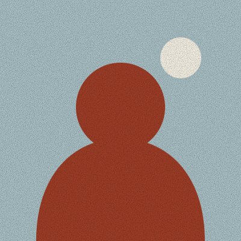

I was a school librarian for eleven years. The best part of the job was the five minutes after the bell, when a student would come back to the desk and say “Have you got another one like that?” This site is my attempt to keep having that conversation.

I read about sixty books a year. Most of them are literary fiction, quieter fantasy, essays and the occasional slim book of poems. I don’t review everything I read; you can see the full list, abandoned books included, in my reading log.
How I rate books
Review copies
I’m happy to receive review copies, but I can’t promise a review, and I’ll always say when a book was sent to me. I don’t accept payment for reviews, and I don’t run sponsored posts.
“A reader lives a thousand lives before he dies. The man who never reads lives only one.”
A line I had pinned above the library desk for years. I’ve since stopped worrying about who said it first.
Say hello
Recommendations, disagreements and photos of your own teetering piles are all welcome at nora@example.com.